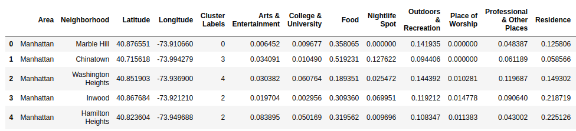

27th June, 2020 · 10 min read
Analysis of NYC and Tokyo Check-ins (Foursquare)
Table of contents
- A. Introduction
- B. Data acquisition and cleaning
- C. Methodology
- D. Exploratory Data Analysis
- E. Results and Discussion
- F. Conclusion
- G. References
A. Introduction
A.1 Background
New York and Tokyo are the most populous centre in the United States and Japan, respectively. Though Tokyo is a prefecture of Japan, the population of Tokyo city (~9.27m in 2015) is comparable to that of New York (~8.47m in 2015). I decided to compare these two cities and see how similar or dissimilar they are to one another.
Figure 0. Images of New York City [Left] and Tokyo City [Right]
One way to go about comparison is to compare the activities of mobile users from Location Based Social Networks (LSBNs). LSBNs can help to understand the spatial activity preferences of users, that can enable various applications such as venue recommendations based on user’s history, location popularity, correlations between most actively visited places to uncover any insights, etc.
The digital footprints collected from LSBNs can help in comparing the preferences and activities of mobile users in New York and Tokyo city, and that can help us visualize how similar or dissimilar they are from one another. We can compare the type of locations (from Foursquare venues) that are frequented and generate comparison charts or clusters on a map to show the differences.
A.2 Possibilities
The insights from this can be used by companies working on recommendation systems to recommend venues to their users based on historical data. It could also help a business owner in deciding where to set up a business by analyzing the correlation between different venue types and near to which location their business would be most profitable.
B. Data acquisition and cleaning
B.1 Data Sources
The dataset which I’m using in this project can be acquired from here. This dataset is originally used for studying the spatial-temporal regularity of user activity in LBSNs [1].
This dataset includes long-term (about 10 months) check-in data in New York city and Tokyo collected from Foursquare from 12 April 2012 to 16 February 2013 [2].
It contains two files (NYC and TKY) in tsv format. Each file contains 8 columns, which are:
- User ID (anonymized)
- Venue ID (Foursquare)
- Venue category ID (Foursquare)
- Venue category name (Fousquare)
- Latitude
- Longitude
- Timezone offset in minutes (The offset in minutes between when this check-in occurred and the same time in UTC)
- UTC timestamp
There are around 2.27m check-ins in New York City and 5.37m check-ins in Tokyo City. In above columns, the semantic meaning of a check-in can be found from ‘Venue Category Name’ (from Foursquare - Endpoint: ‘/venues/categories’ ) column.
Figure 1. NYC Source DataFrame
Figure 2. Tokyo Source DataFrame
As can be seen in Figure 1 and Figure 2, the given datasets contain venue category name with
latitudes and longitudes, but they don’t contain the borough and neighbourhood information. To get
the venue location info such as region, neighbourhood, etc., there are two easy options: one is to
use Google Reverse Geocoding API or to use Foursquare API. However, in both of these options, the
API calls are in the premium category.
An alternative (but complex) way is to use GeoJSON files. I’ve searched on the Internet and found the GeoJSON files for both New York [3] and Tokyo [4].
Tokyo’s shape file had neighbourhood information nested in polygon coordinates, so I had to flatten the JSON file to a dictionary, and then calculated the geographic mid point from the boundary information for each borough and their neighbourhoods [5].
After parsing both the files the output looks as follows:

Figure 3. NYC and TYO GeoJSON DataFrame
B.2 Data Cleaning
The first thing I did was to combine the neighbourhood information to the cities’ respective DataFrames. This turned out to be a fairly complex task, but in summary, it goes like this:
- Find the distance between each venue’s coordinate to all boroughs’ coordinates [6].
- Repeat above for all venues.
- Find the minimum of distances for all boroughs and assign the minimum-distant-borough info to the DataFrame column.
- Repeat for both NYC and TYO DataFrames
This was a computationally intensive task, so I cached the results to local disk. Assign a Country Code column to each DataFrame for differentiation. After tidying up, the final DataFrame looks as follows:
Figure 4. Combined DataFrame containing ~8m rows.
C. Methodology
I used the Folium library to visualize venue categories on maps for both New York and Tokyo data sets.

Figure 5. New York Boroughs
Figure 6. Tokyo Boroughs
In the datasets, there is UTC timestamp column. I utilized this column to convert time of day column which contains categorical values such as morning, midday, evening, and late night.
I used Foursquare API to fetch venue parent categories to avoid re-clustering the data and just populate the maps. We’ll use these categories as our clusters. All the venue types falls in one of the below categories:

Figure 7. Venue Types
Since the datasets are huge, I narrowed down the k-means-clustering approach to Manhattan, MYC and Kanto, TYO regions only. After applying the algorithm, the neighbourhoods are split between the categories and their weight (probability of its occurence). Following dataframes shows this data:

Figure 8. Manhattan Clusters DataFrame
Figure 9. Kanto Clusters DataFrame
I used above dataframes to visualize the clusters on Folium maps.
Figure 10. Manhattan Clusters
Figure 11. Kanto Clusters
D. Exploratory Data Analysis
D.1 Venue Check-in Behaviour
At face value, how different are these two cities? This can be visualized by creating wordclouds of venue categories. Following are the word clouds:
Figure 12. New York Venue Categories
Figure 13. Tokyo Venue Categories
D.2 Most Visited Venue Types
Which types of venues were most visited? This can be visualized by following bar charts:
Figure 14. New York Venue Types Visited
Figure 15. Tokyo Venue Types Visited
D.3 Venue visit time of the day
When were the users most active? The following bar charts would help in visualizing it:
Figure 16. New York Time of Day activity
Figure 17. Tokyo Time of Day activity
E. Results and Discussion
Just by analyzing charts, we can observe that there is a huge difference in user activities between
New York and Tokyo. Looking at the word clouds (Figure 12 and 13), the difference just pops
up. In NYC word cloud, we see that the New Yorkers spent their time between the office and other
recreational places almost evenly. While in Tokyo, it seems that the users mostly spent their time
travelling.
Looking at the venue type bar charts of the two cities (Figure 14 and 15), we observe similar
findings as described before. New Yorkers have visited the dining-out places with an almost equal
split among Office, Travel, Public Places, etc. While in Tokyo, the majority of activities falls
under Travelling, Food, and Shopping, other activities take up only a small part of the split.
Let’s analyze the activities based on the time of the day (Figure 16 and 17). People in New York are
not much active in the morning, but they spent their time evenly for the rest of the day and are
most active in Evening. While in Tokyo, the opposite happens. Most of the activity is in the Morning
and Midday and the Evening activities are almost negligible.
F. Conclusion
Just by analyzing the charts and location of different clusters on the map, it can be concluded the people in both cities have a very different lifestyle.
In future studies, more detailed maps can be created to visualize which types of activities are more prominent and in what places. This kind of analysis could help any business owner to segment their target audience appropriately, analyze churn rate, improve their operations, etc.
Many other kinds of analysis can be done on this dataset and various hidden insights are yet to be uncovered.